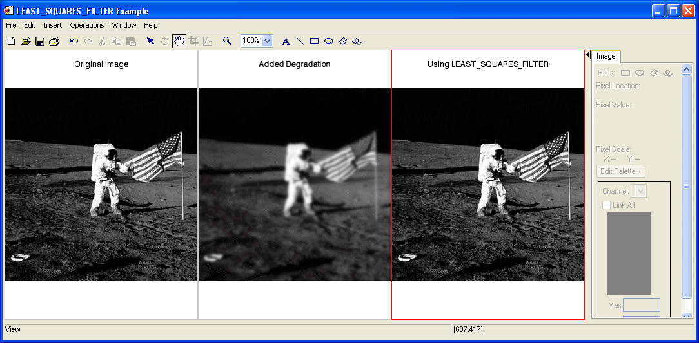

The LEAST_SQUARES_FILTER function reduces degradation and noise in an image based on the mean and variance of the degradation and noise. This is also known as a constrained least squares filter .
If the degraded image is modeled in the spatial domain by
the constrained least squares filter seeks to find the minimum of
subject to the constraint
The solution to this problem is given by the following equation:
where H(u,v) is the degradation function and
is the complex conjugate of the degradation function. P(u,v) is the Laplacian operator frequency domain, and γ is a parameter which is set to meet the previously-mentioned constraint. G(u,v) is the frequency domain of the observed image, and
is the frequency domain estimate of the undegraded image.
This routine is written in the IDL language. Its source code can be found in the file least_squares_filter.pro in the lib subdirectory of the IDL distribution.
Result = LEAST_SQUARES_FILTER( ImageData , DegradationFunction , Gamma )
Returns a double-precision floating-point array of the same dimensions as ImageData .
A two-dimensional array containing the pixel values of the input image.
A two-dimensional array representing the transfer function that describes the image degradation.
Degraded images are modeled as the product of the true image with a degradation function and the addition of noise, represented by G(u,v) = H(u,v)F(u,v) + N(u,v) . G(u,v) is the observed image in the frequency domain, H(u,v) is the degradation function, F(u,v) is the true image in the frequency domain, and N(u,v) is the noise function in the frequency domain.
A scalar with a value chosen to meet the constrained least squares criterion.
None
In the following example, we add some atmospheric turbulence degradation to an image and filter it with LEAST_SQUARES_FILTER.
First, we read the file and add noise to the image:
; Read in the file
file = FILEPATH('moon_landing.png', SUBDIR=['examples','data'])
imageOriginal = READ_PNG(file)
; Generate some atmospheric turbulence degradation.
xCoords = LINDGEN(300,300) MOD 300 - 151
yCoords = TRANSPOSE(xCoords)
k = 0.0025
degradation = EXP(-k * (xCoords^2 + yCoords^2 ) ^ (5d/6d) )
imageDegraded = degradation*FFT(imageOriginal, /CENTER)
imageDegraded = REAL_PART(FFT(imageDegraded, /INVERSE, /CENTER))
; Filter the degraded image with the least squares filter
imageFiltered = LEAST_SQUARES_FILTER(imageDegraded, $
degradation, 10d^(-18.22))
Next, we render the result:
; Find the image dimensions so we can display three of them
; side by side in an iImage iTool
dims = [(SIZE(imageOriginal))[1]*3, $
(SIZE(imageOriginal))[2]*1+120]
; Display the original, degraded, and filtered images
IIMAGE, imageOriginal, VIEW_GRID=[3,1], $
VIEW_TITLE='Original Image', $
DIMENSIONS=dims, WINDOW_TITLE='LEAST_SQUARES_FILTER Example', $
/NO_SAVEPROMPT
IIMAGE, imageDegraded, /VIEW_NEXT, VIEW_TITLE='Added Degradation'
IIMAGE, imageFiltered, /VIEW_NEXT, $
VIEW_TITLE='Using LEAST_SQUARES_FILTER'
; Increase the text size
ISETPROPERTY, 'text*', FONT_SIZE=36

|
7.1 |
Introduced |
MEAN_FILTER , ESTIMATOR_FILTER , BANDPASS_FILTER , BANDREJECT_FILTER , WIENER_FILTER